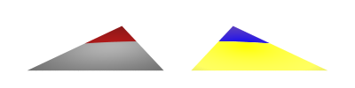

2.4.9 Smooth triangle artifact

|
|
2.4.8 The shadow line artifact |
POV-Ray 3.6 for UNIX documentation 2.4.9 Smooth triangle artifact |
2.5 Appendices |
|
There is a peculiar problem with smooth triangles which shows as a lighting artifact in certain cases. This can happen in individual smooth triangles, meshes with smooth triangles and smooth heightfields. The problem also manifests itself when using the slope pattern in the same situation. This image shows the two cases:

The source code of this image is the following:
camera { right x*4 location <0,1,-5> look_at 0 angle 35 }
light_source { y*100, 1 }
light_source { -y*100, x }
smooth_triangle
{ <-.5,0,-1>,<-1,1,-1>, <.5,0,-1>,<1,1,-1>, <0,0,1>,<0,1,1>
pigment { rgb 1 }
translate -x*.6
}
smooth_triangle
{ <-.5,0,-1>,<-1,1,-1>, <.5,0,-1>,<1,1,-1>, <0,0,1>,<0,1,1>
pigment { slope y color_map { [0 rgb z][1 rgb x+y] } }
finish { ambient 1 }
translate x*.6
}
The triangle at the left is a regular smooth triangle which is illuminated by a white light source from above. There is also a red light source illuminating the triangle from below. As you can see, the farther part of the triangle is wrongly illuminated as red. No part of the triangle should be illuminated by the red light source because the upper side of the triangle is nowhere facing down.
The triangle at the right is the same smooth triangle with a slope pattern applied to it, which goes from blue (in the negative y direction) to yellow (in the positive y direction). Lighting has been eliminated by specifying a high ambient. As all the parts of the upper side of the triangle are pointing upwards, the whole triangle should be colored with shades of yellow, but as you can see, the same farther part is wrongly colored blue.
(If you guessed that the problem happens when the normal vector of the triangle is pointing away from the camera, then you guessed right.)
The problem is caused by the rendering algorithm used in POV-Ray. The following text is quite technical, so if you just want to read about possible solutions to this problem, you can skip to the next subsection.
The problem is that the rendering engine assumes that objects return the true normal vector for the given point in their surface. For an object to render correctly, it must give the exact normal vector (ie. a vector which is exactly perpendicular to the surface at that point).
Smooth meshes and heightfields do not do this. They return normal vectors which are not perpendicular to the actual surface. This causes errors in the rendering.
What happens is that when the rendering engine shoots a ray and it hits the surface of an object, the engine asks the object "what is the normal vector at this point in your surface?". Now, if the angle between the returned normal vector and the ray vector is less than 90 degrees (that is, the normal vector points away from the point of view of the starting point of the ray), then the engine reverses the returned normal vector. This is essential for the lighting to work properly (if the normal is not reversed in this case, you would get all kind of errors in lighting, ie. surfaces which are illuminated from behind when they should not, or surface which are not illuminated even though they are facing a light source).
This assumes that the normal vector returned by the object is a true normal vector, and it works perfectly when this is so.
However, if the object returns an erroneous normal vector, ie. a vector which is not perpendicular to the surface, rendering errors can occur.
Smooth triangles and heightfields do this, and the price to pay are the artifacts in the lighting in certain situations.
The artifact is produced when the true normal vector would have an angle larger than 90 degrees with the ray, but the the actual vector returned by the object has an angle smaller than 90 degrees with the ray. In this case the rendering engine reverses the normal vector even though it should not. This is because it assumes that it is the true normal vector when in fact it is not.
This problem could be solved by making the decision of inverting the returned normal vector according to the true normal vector of the surface instead of the returned vector. However, due to the internal implementation of the rendering engine in the current POV-Ray 3.5, doing this is not trivial. It may be fixed in POV-Ray 4.0, where the rendering engine will be written again and this kind of things can be taken into account from the very beginning.
You can get rid of the lighting artifact by applying double_illuminate to the object in question. When
a surface is double illuminated, it does not matter which way its normal points - it will always be illuminated
regardless of which side the light source is. Of course it should not matter that the object is now illuminated from
both sides. If this is a problem, then the problem is not easily solvable.
Note that in the example given at the beginning of this section this solution does not work: It would illuminate
the whole triangle with both light sources! However, this solution works well with closed triangle meshes, where the
inner side of the mesh is shadowed by the mesh itself. However, if you are using no_shadow in the object
(for example to get rid of shadow line artifacts), new problems can arise in the
lighting (such as bright parts in places where there should not be any; these are all cause by this same problem).
The slope pattern is more problematic and there is no generic solution which will work in all cases. Fortunately the most common use of the slope pattern is in heightfields, and there a solution is possible:
If you are having this problem in a smooth heightfield, the solution is to mirror the color_map (or whatever map you are using) around 0.5. This way it does not matter if the normal is reversed. That is, if you had something like this in a heightfield:
slope y color_map
{ [0.50 rgb <.5,.5,.5>] // rock
[0.75 rgb <.8,.4,.1>] // ground
[1.00 rgb <.4,1,.4>] // grass
}
you simply have to mirror the map around 0.5, ie. add the values from 0 to 0.5 in reverse order:
slope y color_map
{ [0.00 rgb <.4,1,.4>] // grass
[0.25 rgb <.8,.4,.1>] // ground
[0.50 rgb <.5,.5,.5>] // rock
[0.75 rgb <.8,.4,.1>] // ground
[1.00 rgb <.4,1,.4>] // grass
}
Besides this you should, of course, apply double_illuminate to the heightfield in order to get the
proper lighting.
|
|
2.4.8 The shadow line artifact | 2.4.9 Smooth triangle artifact | 2.5 Appendices |
|